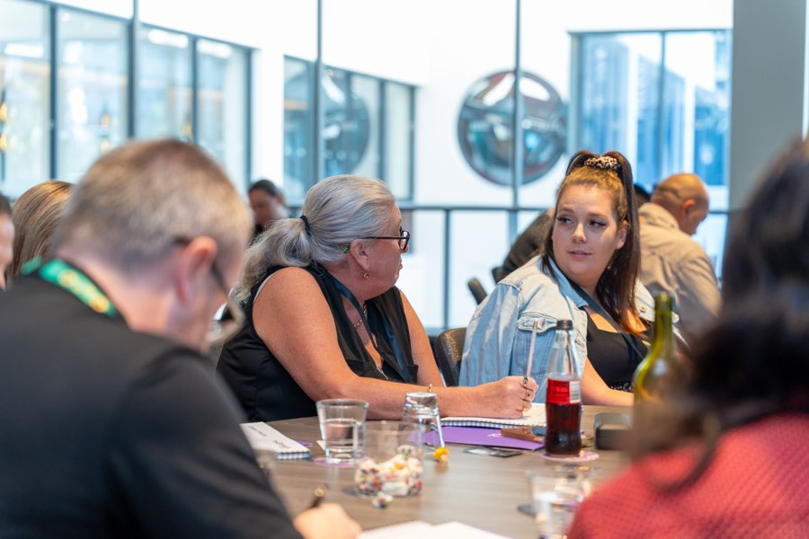
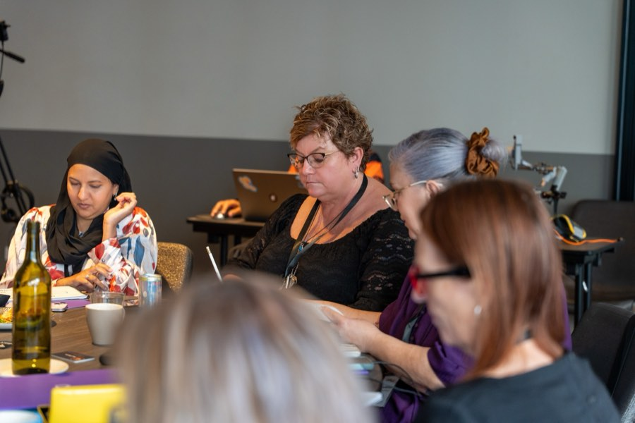

NDIS SEO
Long-term visibility built for the searches your participants actually type, whether they type them into Google or ask an AI.
Show up, or the family finds someone else
When a family searches "NDIS provider near me" or "SIL vacancy Penrith", your website either shows up or it does not. If it does not, that family finds someone else. They do not scroll to page two.
SEO is how you show up in those searches without paying for every click. It takes time to build, but once your pages rank, every visit is free and the results compound month over month. A page that ranks today keeps working next month and the month after.
I build SEO specifically for NDIS providers. That means targeting the searches real participants, families and coordinators actually type, in the suburbs you actually serve, for the services you actually offer.
The way people search is changing too. Families and coordinators are increasingly asking AI tools, ChatGPT, Google AI Overviews, Perplexity, before they type a traditional search. I build your content for both: ranking in Google and being the source AI pulls its answers from.

What I actually build
Show up where you actually operate
A single "services" page on your website cannot rank for every suburb you cover. If you offer SIL in Parramatta, community access in Liverpool, and in-home support in Campbelltown, each of those needs its own page, written for that location and that service.
I build landing pages for each suburb and service combination that matters to your business. Each page is written to answer the questions someone in that area would actually ask, with clear information about what you offer and how to get in touch.
This is the work that adds up. Ten well-built suburb pages generate more qualified traffic than one generic services page ever will.
The listing that shows up before your website does
When someone searches for a local NDIS provider, Google often shows the map pack before any organic results. Your Google Business Profile is what appears there: your name, location, reviews, photos, and contact details.
I set up and optimise your profile with the right categories, accurate service areas, real photos of your team and facilities, and a system for collecting reviews from participants and families. A well-maintained profile with genuine reviews builds trust before anyone clicks through to your website.

Write for the question, not the keyword
The families and coordinators searching for NDIS providers are not typing marketing jargon. They are asking real questions: "What is SIL?", "How do I change NDIS providers?", "What does a support coordinator do?"
I write content that answers those questions clearly and positions your provider as the one that understands the sector. It ranks in search results for those questions, and it builds trust with anyone who lands on it. A provider that explains things plainly feels more trustworthy than one that hides behind buzzwords.
This kind of content also performs well in AI search. The same content that ranks in Google is the content AI tools cite.
The work nobody sees that makes everything else perform
Page speed, mobile usability, site structure, internal linking, meta data. None of this is visible to the person reading your website, but all of it affects whether Google ranks your pages or buries them.
I audit the technical foundations of your site and fix what is holding it back. For providers running WordPress, Wix, or Squarespace, there are common issues I see repeatedly: slow load times, missing meta descriptions, broken mobile layouts, and page structures that make it hard for Google to understand what the site is about.
I also implement structured data markup, the code that helps both search engines and AI tools understand what your site is about, where you operate, what services you offer, and how to contact you.
When someone asks ChatGPT for an NDIS provider, your name should come up
More families and coordinators are asking AI tools before they open Google. The AI pulls its answer from web content. If your website has clear, well-structured answers to the questions people ask, you become the source it cites.
What AI tools favour
Content that answers a specific question directly, in plain language, with clear structure. A page that buries useful information inside a wall of marketing copy gets skipped. A page that states what you do, where you operate, who you support, and how to get in touch, clearly and early, gets cited.
How I build for it
Clear headings, direct answers in the first paragraph, structured data markup so machines can read your service areas and offerings, and FAQ content that matches the way people actually ask questions in natural language.
This is still early. The providers building content for it now will have an advantage over those who wait until it is standard practice.
SEO is a long game. Here is the timeline.
I will not tell you that SEO will fill your calendar next month. It will not.
-
Month 1 to 2
Technical audit, keyword research, site structure fixes, Google Business Profile setup, structured data implementation.
-
Month 3 to 4
Suburb landing pages live, content plan underway, early indexing, AI search baseline established.
-
Month 4 to 6
Rankings begin to move for lower-competition terms, the suburb-specific and long-tail queries. AI citation monitoring begins.
-
Month 6 and beyond
Rankings build for more competitive terms, organic traffic compounds, cost per enquiry drops as volume grows, AI search visibility becomes measurable.
If you need enquiries this month, start with Google Ads. SEO builds the asset underneath that keeps delivering after the ad spend stops, across both traditional and AI-powered search.
What providers ask about NDIS SEO
How long does NDIS SEO take to work?
Three to six months before you see meaningful movement in rankings. Some lower-competition suburb terms can rank faster. Competitive terms like "NDIS provider Sydney" take longer. I report monthly on progress so you can see the trajectory.
How much does NDIS SEO cost?
It depends on the scope: how many suburbs, how many services, and how much content is needed. I price on a monthly retainer based on the work required. A typical engagement for a local provider starts from $1,500 to $2,500 per month. I will scope it properly before quoting.
Do I need a new website for SEO to work?
Not always. If your current site is structurally sound, I can build on it. If it is slow, outdated, or built on a platform that limits what I can do, I will tell you. Sometimes the honest answer is that the site needs rebuilding before SEO investment makes sense.
What is the difference between SEO and Google Ads?
SEO is organic visibility. You earn your spot in search results by having the best, most relevant page. It takes time but the traffic is free. Google Ads is paid visibility. You pay for every click, but you show up immediately. They work well together: ads for now, SEO for the long term.
What is AEO and do I need it?
AEO stands for answer engine optimisation. It means structuring your content so AI search tools cite your website when someone asks a question about NDIS services. The principles are similar to SEO: clear answers, structured content, plain language. I build for both because the line between traditional search and AI search is blurring.
Will AI search replace Google?
Not yet, and probably not entirely. But the share of searches that start with an AI tool is growing, especially for questions like "how do I find an NDIS provider" or "what is the difference between SIL and SDA". I treat AI search as an additional channel to build for, not a replacement for traditional SEO.
SEO is one channel. If you would rather have search, paid, content and the referral side planned against the same goal, that is Managed Growth.
Find out where your website stands, in Google and in AI search
The audit is free.